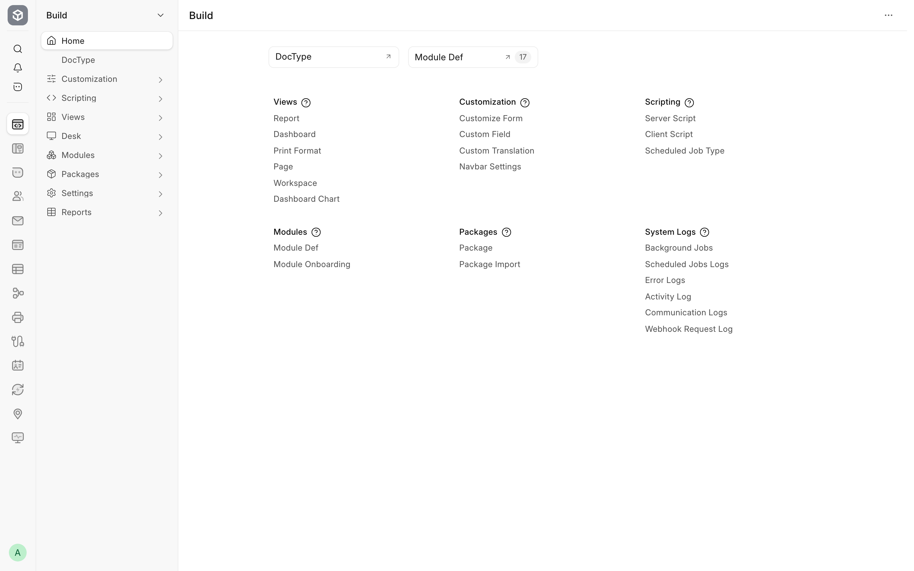
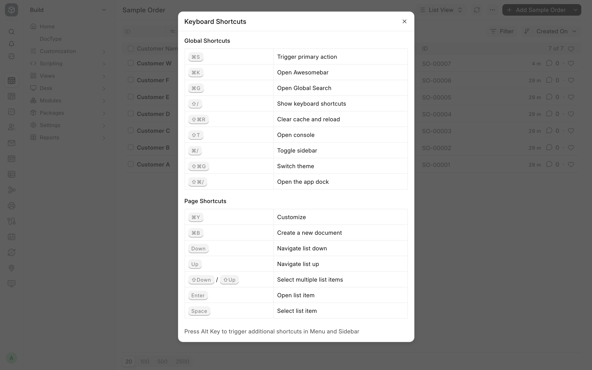

Desk¶
The desk is the back-office user interface of a Frappe site. System Users use it to read, create and change documents. It opens at /desk. Use this page to learn the parts of the desk screen and how to move between them.
Log in¶
- Open
<site>/loginin the browser. - Type your email (or username) and password.
- Click Login.
After login, a System User goes to /desk. A role home page (Home Page on the Role) or a default workspace on the User changes this target (get_home_page() in frappe/website/utils.py). A Website User does not get desk access and goes to the website instead. The logic is in frappe/auth.py (LoginManager.set_user_info).
The apps screen¶
/desk shows the apps screen. It has one icon for each installed app that you can open. On a site with only Frappe installed, there is one icon: Framework. Studio and Flow have their own routes, /studio and /flow. They have no icon on the apps screen.

The top bar of the apps screen has:
- Search with the Ctrl+K hint. It opens the awesomebar.
- The notification bell.
- Your avatar. Click it to open a menu with My Settings, Toggle Theme, About, Frappe Support and Logout.
Click an app icon to open the app at its landing page.
For developers
An app adds its icon with the add_to_apps_screen hook in hooks.py (keys name, logo, title, route, has_permission, and sequence_id for the sort order). The Single DocType Desktop Settings has the field desktop_page (Apps or Desktop Icons). It selects which grid /desk shows. Apps add items to the avatar menu with frappe.pages["desktop"].desktop_page.add_menu_item({label, icon, onclick, order}). See Workspaces, sidebar and dock.
Desk layout¶
Inside an app, the screen has three columns.

| Part | Where | What it does |
|---|---|---|
| Dock | Narrow column on the far left | Switches between the modules of the current app. Also holds search, notifications, Flow and your user menu. |
| Sidebar | Column next to the dock | Shows the links of the current module: a workspace (Home), DocTypes, reports and pages, grouped in sections. |
| Page | Main area | Shows the workspace, list, form, report or page that you opened. |
Dock¶
The dock has three groups of buttons:
- Utilities at the top: Search, Notifications and Flow. Flow shows only if you can read
Flow Session. - One tile for each module of the current app, for example Build, Users, Email and Printing.
- Your avatar at the bottom. It opens the user menu.
The dock has two modes. Set the mode in My Settings > Appearance > Dock.
| Mode | Behavior |
|---|---|
| Pinned (default) | The dock is always visible as a column. |
| Floating | The dock is hidden. Move the pointer to the left edge of the window to show it. |
Press Ctrl+Shift+/ to open the dock from the keyboard. To change the order of the tiles, select Manage Dock in the user menu. You cannot drag the tiles in the dock itself.
Sidebar¶
The sidebar header shows the name of the current module. Click the header to open its menu:
| Item | What it does |
|---|---|
| All apps | Goes back to the apps screen at /desk. |
| Edit Sidebar | Opens the sidebar editor. You can add, remove and move items. |
| Help | Shows the help links for the current page and the help items of the site. |
When the dock is not available, the menu also shows Modules and Apps to switch module or app. Items from Navbar Settings also show in this menu.
Click a section name in the sidebar to expand it. Press Ctrl+/ to collapse or expand the sidebar.
Workspaces¶
A workspace is a page with shortcuts, link cards, charts and number cards. The Home item at the top of a module sidebar opens the workspace of that module, for example /desk/build.
Click the ... button at the top right of a workspace to open the workspace menu:
| Item | Shows when | What it does |
|---|---|---|
| Edit | You can edit this workspace | Makes the blocks editable. Drag blocks to move them. |
| New | You can create workspaces | Creates a new workspace. |
| Manage | You can manage at least one workspace | Opens the workspace manager. |
| Reset to Standard | The workspace was customized and you have access | Removes the customizations. |
A new workspace has an Access setting: Only to you, To a group of users or To everyone. Only a user with the Workspace Manager role can make a workspace for a group or for everyone. Private workspaces open at /desk/private. To show a My Space link to them in the user menu, turn on Show My Space in My Settings.
Search¶
Click Search in the dock, or press Ctrl+K, to open the awesomebar. Type a DocType name, a report name or new <DocType>. Press Ctrl+G to open global search. Refer to Search.
Notifications¶
Click the bell in the dock to open the notifications panel. A dot on the bell shows that you have unread notifications.
The panel has two tabs:
- All: your notifications, for example assignments, mentions and shares.
- Events: your upcoming events.
At the top of the panel, click the gear icon to open your Notification Settings. Click the check icon to mark all notifications as read. Click See all Activity at the bottom of the list to open the Notification Log list. Refer to Collaboration.
User menu¶
Click your avatar at the bottom of the dock.
| Item | What it does |
|---|---|
| My Space | Opens your private workspaces. Shows only if Show My Space is on. |
| My Settings | Opens the settings dialog for your user. |
| Manage Dock | Opens the dock editor. Shows when the current module belongs to an app. |
| Reload | Clears the cache and reloads the desk. |
| Logout | Logs you out. |
My Settings¶
My Settings opens a dialog with these tabs: Profile, Email, Appearance, Preferences, Lists, Forms, Reports, Session Defaults and Keyboard Shortcuts.
On Appearance, set the theme (light, dark or system), the form width (Compact or Full Width) and the dock mode. Press Ctrl+Shift+G to open the theme switcher from anywhere.
Desk settings of a user¶
These check fields on the User DocType turn parts of the desk on or off for one user. A System Manager sets them in the Desk Settings section of the User form. The user can change some of them in My Settings.
| Field | Label | Default | Effect |
|---|---|---|---|
search_bar |
Search Bar | 1 | Shows the awesomebar. |
notifications |
Notifications | 1 | Shows the notification bell. |
show_my_space |
Show My Space | 0 | Shows My Space in the user menu. |
dock_mode |
Dock | Pinned | Pinned or Floating. |
list_sidebar |
Sidebar (list) | 1 | The desk in version 16 does not read this field. |
bulk_actions |
Bulk Actions | 1 | The desk and the server in version 16 do not read this field. Bulk actions show for all users. |
view_switcher |
View Switcher | 1 | Shows the view switcher in list views. |
form_sidebar |
Sidebar (form) | 1 | Shows the sidebar in forms. |
timeline |
Timeline | 1 | Shows the activity timeline in forms. |
dashboard |
Dashboard | 1 | Shows the connections dashboard in forms. |
form_navigation_buttons |
Show navigation buttons | 1 | Shows the previous and next buttons in forms. |
report_split_view |
Split view in reports | 1 | Uses the split view in reports. |
Keyboard shortcuts¶
Press Shift+/ (the ? key) to see the shortcuts for the current page. On macOS, Cmd works in place of Ctrl.

These shortcuts work on every desk page:
| Shortcut | Action |
|---|---|
| Ctrl+S | Do the primary action of the page, for example Save. |
| Ctrl+K | Open the awesomebar. |
| Ctrl+G | Open global search. |
| Shift+/ | Show keyboard shortcuts. |
| Ctrl+Shift+R | Clear cache and reload. |
| Shift+T | Open the System Console. Only for users who can write System Console. |
| Ctrl+/ | Collapse or expand the sidebar. |
| Ctrl+Shift+G | Switch theme. |
| Ctrl+Shift+/ | Open the app dock. |
| Esc | Close the open dialog or the open child table row. |
On a workspace page, type any letter to open the awesomebar with that letter.
Hold Alt to see underlined letters in menus and buttons. Press Alt and the letter to click that item. On macOS, this does not work while the cursor is in a text field.
Shortcuts for lists and forms are on List view and Form view.
For developers
Add a shortcut with frappe.ui.keys.add_shortcut({shortcut, action, description, page, condition, ignore_inputs}) (frappe/public/js/frappe/ui/keyboard.js). Pass page to limit the shortcut to one page. Only shortcuts with a description show in the dialog. A menu item gets a shortcut through the shortcut argument of page.add_menu_item().